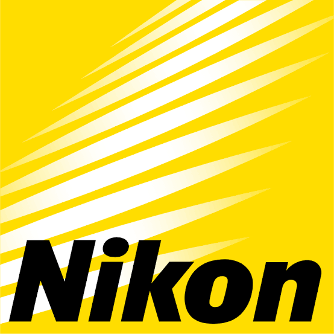

Unlock the future with the power of light
Nikon Corporation adalah perusahaan asal Jepang yang bergerak di bidang teknologi optik, pencitraan, dan teknologi presisi. Nikon didirikan pada 25 Juli 1917 dan berkantor pusat di Shinagawa, Tokyo, Jepang.
Nikon didirikan pada 25 Juli 1917 dengan nama Nippon Kogaku Kogyo Kabushiki Kaisha. Perusahaan ini awalnya berfokus pada pengembangan dan produksi peralatan optik. Seiring perkembangannya, Nikon mulai memproduksi berbagai peralatan fotografi dan memperluas bisnisnya ke bidang teknologi optik dan presisi.
Menjadi perusahaan solusi teknologi yang memanfaatkan teknologi optik dan presisi untuk mendukung masyarakat di berbagai bidang.

Nikon memiliki operasi di Indonesia melalui PT Nikon Indonesia yang menyediakan produk dan solusi untuk kebutuhan industri serta teknologi metrologi.
Shinagawa Intercity Tower C, 2-15-3, Konan, Minato-ku, Tokyo 108-6290, Jepang.